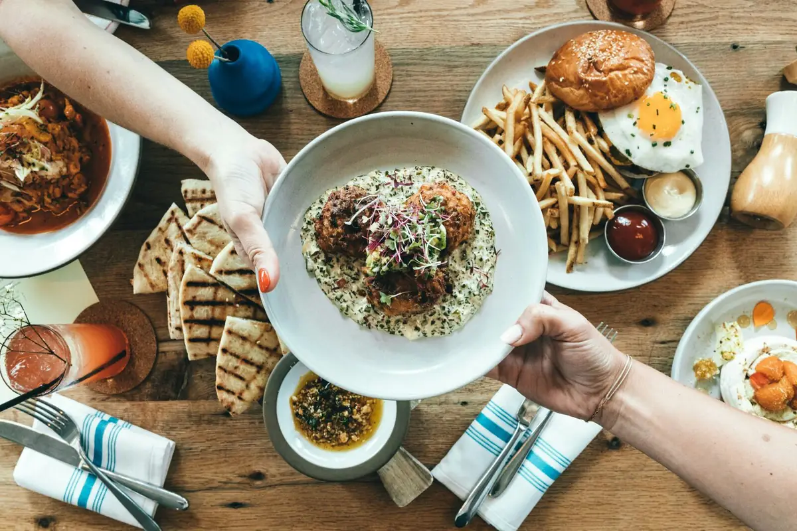
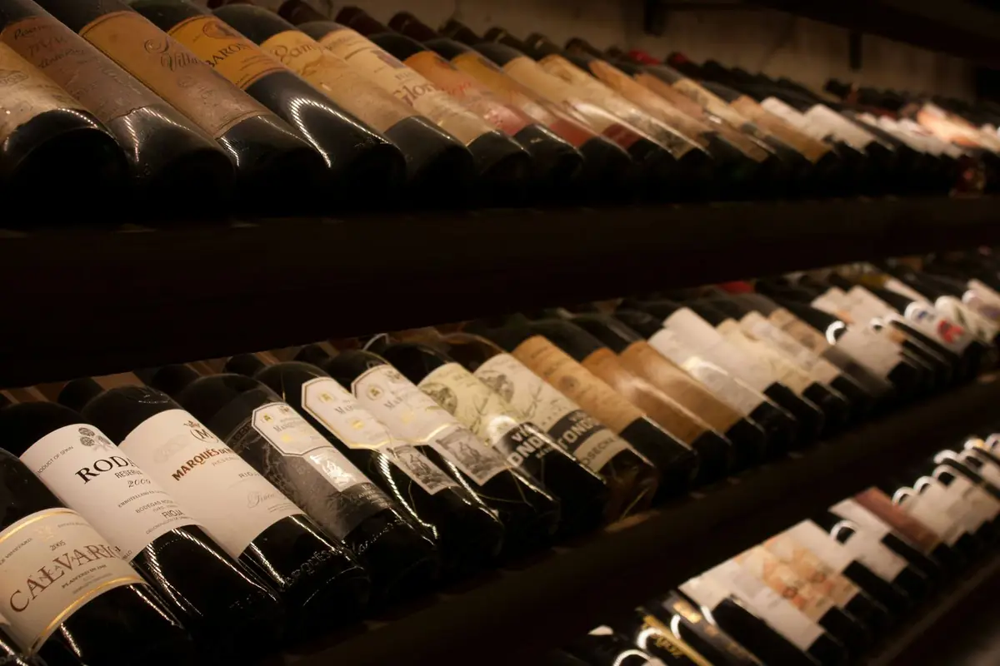

Automne 2026
La carte
Cuisine maison, produits frais et de saison. La carte change avec le marché, l'ardoise du jour est affichée en salle. Prix nets, service compris.

Réservation
Envie d'y goûter ?
Réservez en ligne en une minute, confirmation par SMS.
Réserver une table